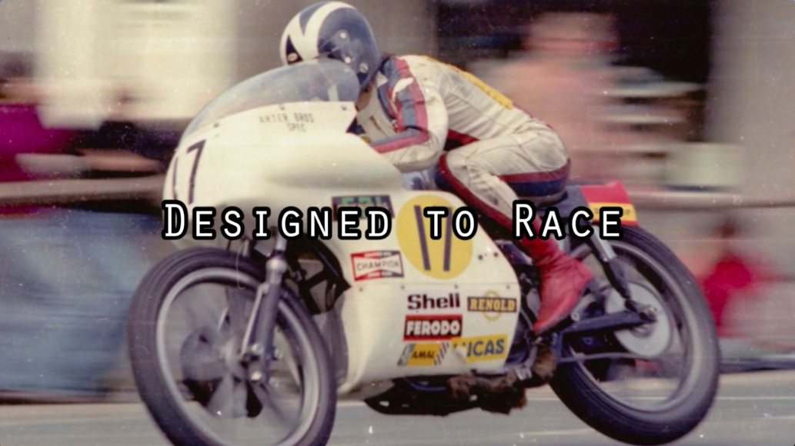
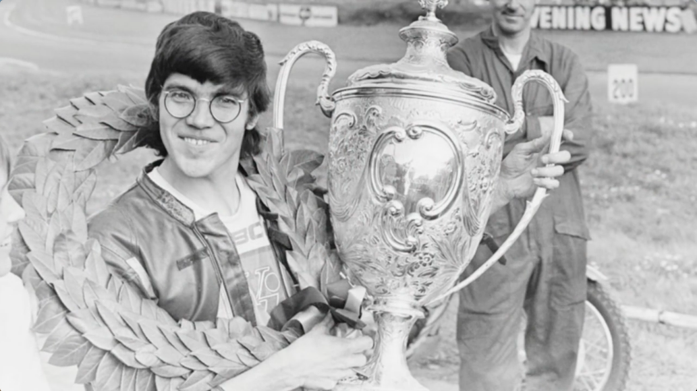
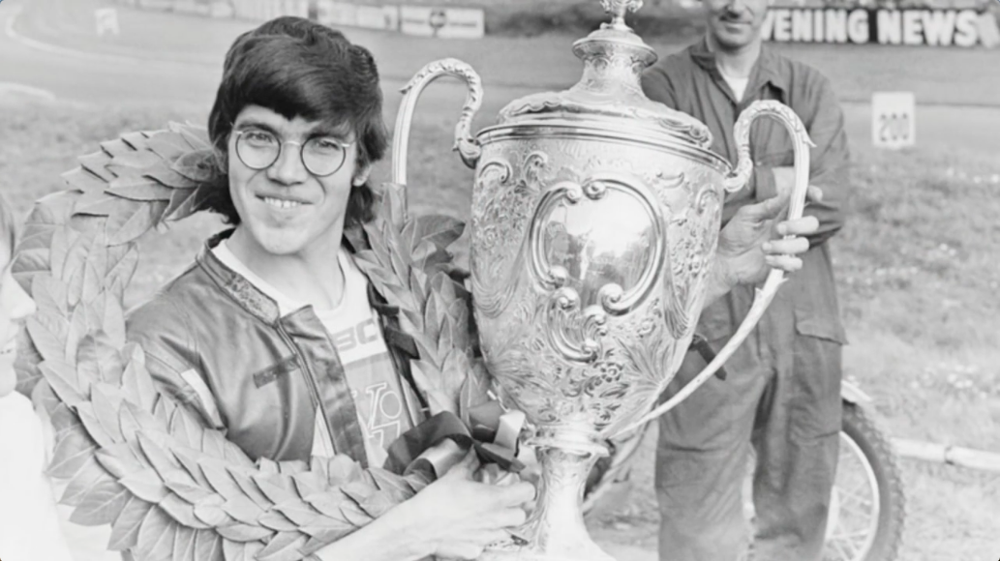
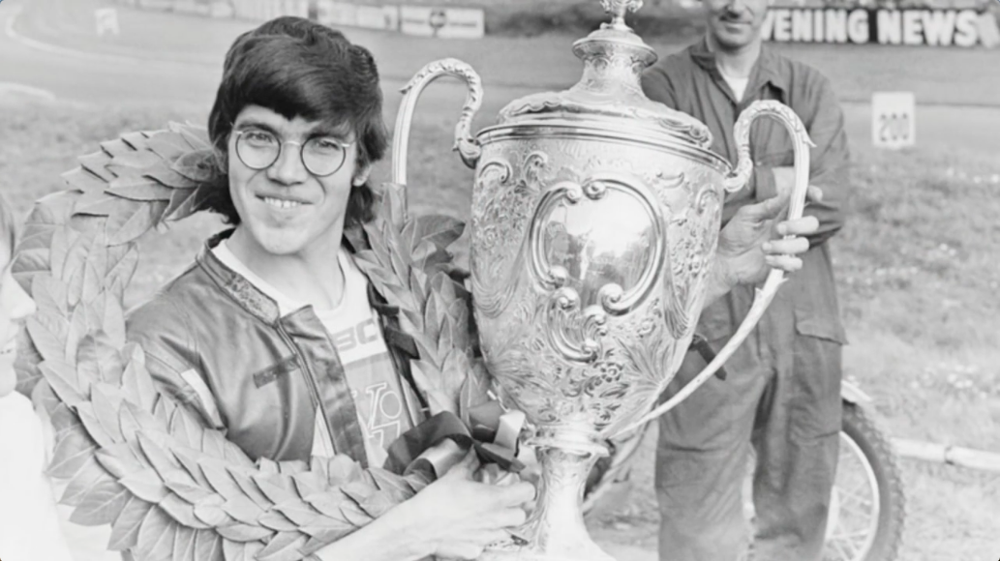

Peter Jack Williams
Work
Blog
About
Designed to Race
Short documentary about Peter Williams. Former Gran Prix and TT motorcycle racer and engineer, now full time engineer. Peter tells us about a few stories and facts about himself, and we also meet his former mechanic while racing, Norman White.


 
